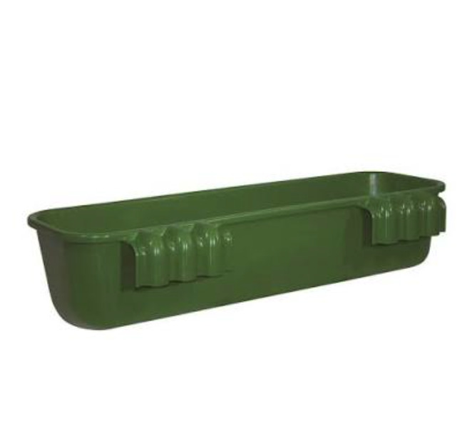
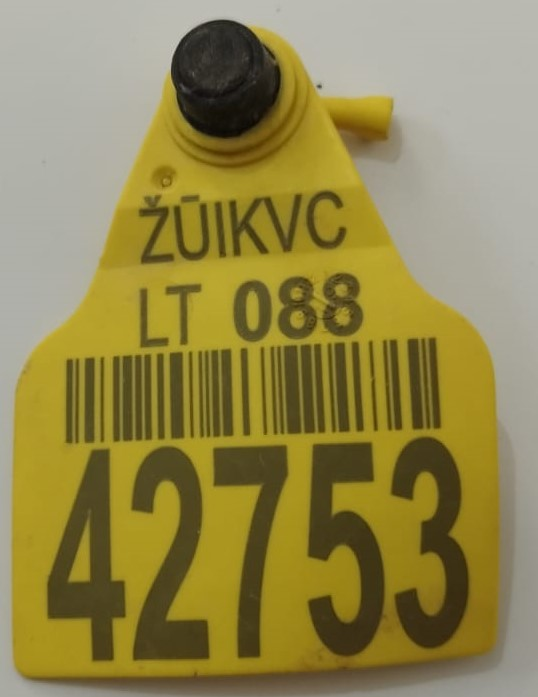
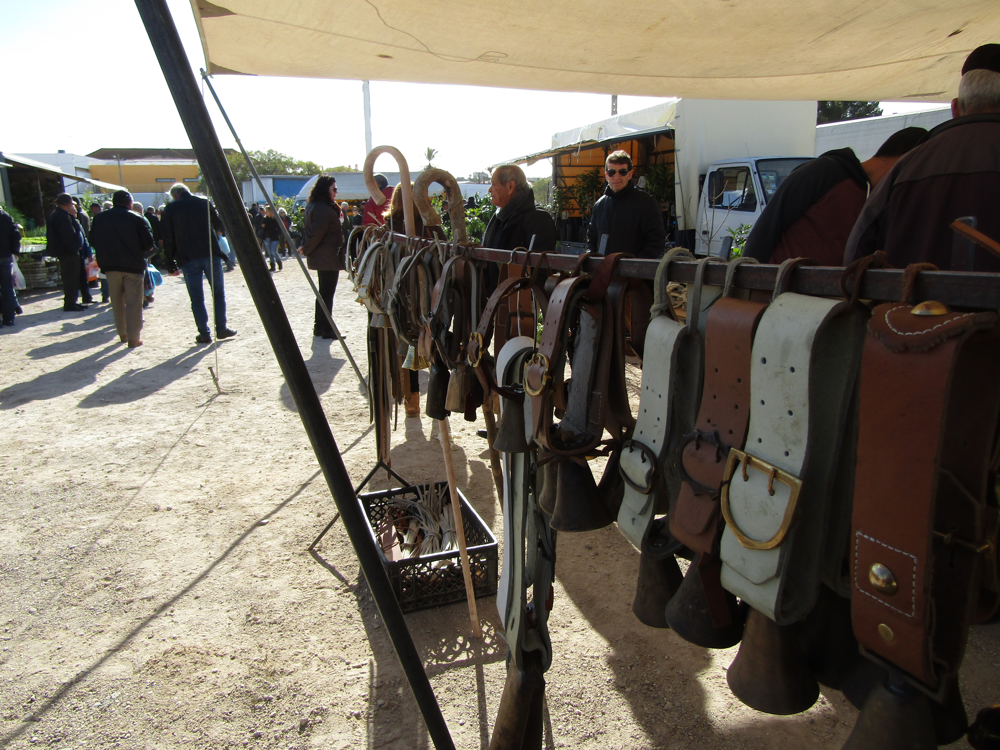
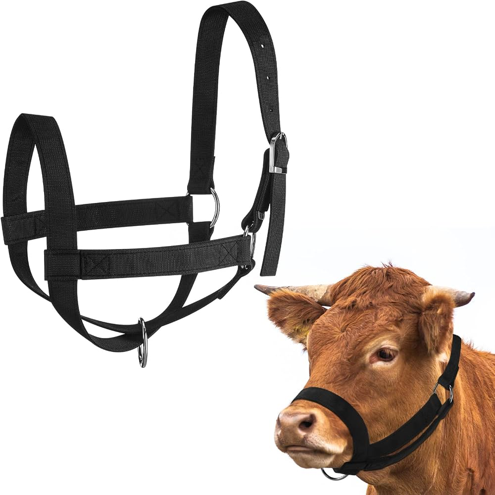
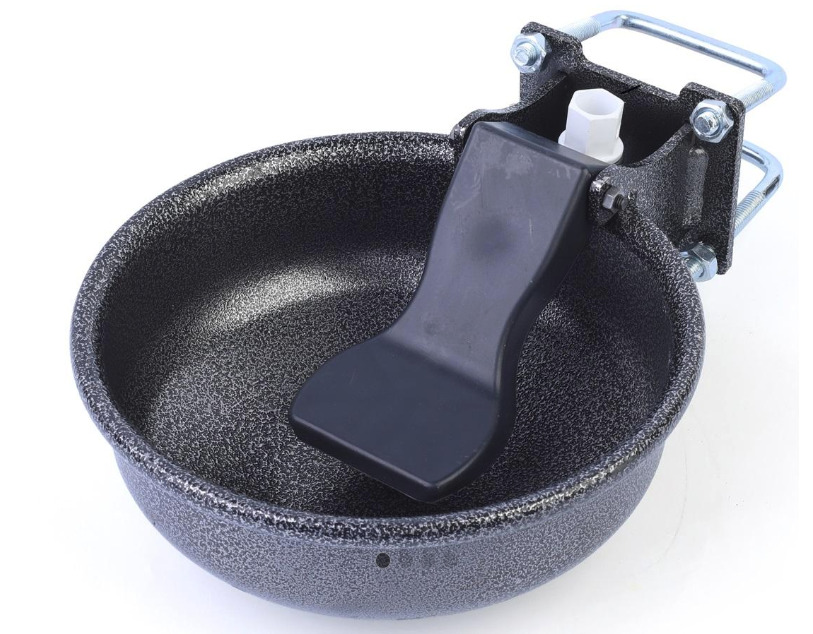

Büyükbaş ve Küçükbaş Aksesuarları
WhatsApp ile Fiyat Sor
Askılı Yemlik (Büyükbaş ve Küçükbaş)
Kategori
Büyükbaş ve Küçükbaş Aksesuarları
Büyükbaş ve küçükbaş hayvanların yemlenmesi için kullanılan, sağlam plastik gövdeli ve kolay monte edilen yemlik.
- Dayanıklı plastik yapı
- Kolay temizlenebilir tasarım
- Yem dağıtımını düzenler ve yem israfını azaltır.
Benzer Ürünler

Kulak Küpesi
Sığır, koyun ve keçilerin bireysel olarak tanımlanması ve takibi için kullanılan numaralı plastik kulak küpesi.

Hayvan Çanı
Koyun ve keçilerin boynuna takılan, meradaki konumlarının sesle fark edilmesini sağlayan metal çan.

Hayvan Yuları
Büyükbaş hayvanların güvenli şekilde yönlendirilmesi ve bağlanması için kullanılan halat veya naylon yular.

Otomatik Suluk
Şamandıra valfi sayesinde kendini otomatik olarak dolduran, hayvanlara kesintisiz temiz su sağlayan suluk.